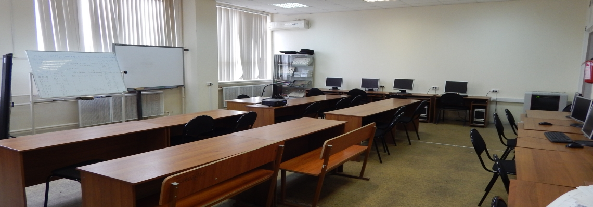
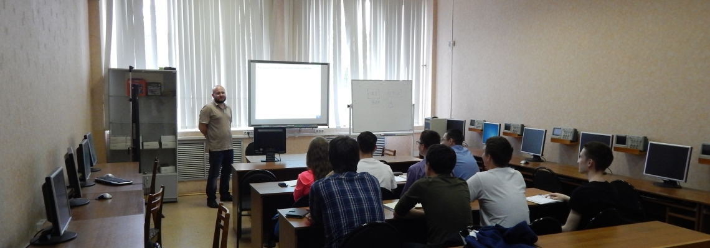

О Кафедре
Вводная информация о кафедре/резюме кафедры
Кафедра образована в 1961 г. под названием СРПУ (счетно-решающие приборы и устройства). Первым заведующим кафедрой был к.т.н., доцент Н.Н. Ливанов В 1965 г. кафедра переименована в кафедру ЭВМ. С 1978 по 2014 гг. кафедру возглавлял д.т.н., профессор, чл.-корр. АН РТ В.А. Песошин. В 2006 г. кафедра получила нынешнее наименование.
С 2014 г. заведующим кафедрой стал к.т.н., доцент И.С. Вершинин.
На кафедре ведется активная научная деятельность по проблемам информатики и вычислительной техники. Области научных исследований:
- Аппаратно-программные системы статистического моделирования и защиты информации. (профессоры Песошин В.А., Захаров В.М., Кузнецов В.М., Шалагин С.В.);
- Конструктивное моделирование систем (профессор Райхлин В.А., доценты Вершинин И.С., Гибадуллин Р.Ф., Минязев Р.Ш.)
- Экспертные системы (доцент Копелевич Л.А.).
В настоящее время научный потенциал кафедры составляют 5 докторов наук и 9 кандидатов наук.
Кафедра является выпускающей по следующим направлениям подготовки:
- 09.03.01 «Информатика и вычислительная техника» (бакалавры), профиль «Вычислительные машины, комплексы системы и сети»
- 09.04.01 «Информатика и вычислительная техника» (магистры), профили:
- Высокопроизводительные вычислительные системы
- Элементы и устройства вычислительной техники и информационных систем
- Сети и телекоммуникации
Лаборатории кафедры оснащены современной компьютерной техникой, приборами и установками, необходимыми для организации учебного процесса и проведения научных исследований на высоком уровне.
Учебные лаборатории кафедры:
- схемотехники и системотехники;
- компьютерной графики;
- систем автоматизации проектирования ЭВМ;
- сетевых технологий;
- проблемно-ориентированных систем.
Выпускники кафедры востребованы для работы в ведущих региональных, российских и зарубежных предприятиях, в том числе:
1.ICL-КПО ВС
2.ФГУП «Федеральный научно-производственный центр «Радиоэлектроника» им. В.И. Шимко»
3.ПАО «Татнефть»
4.Группа компаний «Центр»
5.Министерство внутренних дел по РТ
6.Министерство информатизации и связи РТ
и многих других.
-


